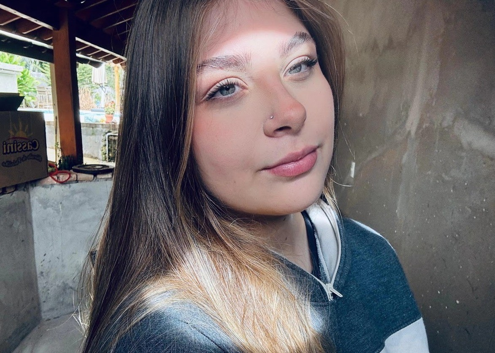
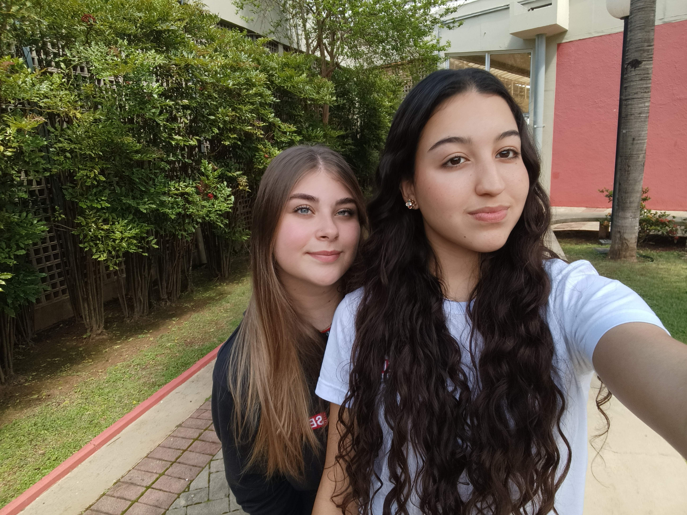
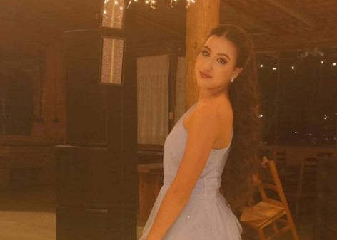

Liderança & Organização
Larissa Aliotto Matheus
Coordenação, transformação pessoal e a garra de dar voz a grandes histórias.
Ver entrevista →

Conheça as jovens mentes por trás da criação, estruturação e desenvolvimento do projeto "Mulheres & Histórias que Inspiram". Através da união, organização e escuta sensível, elas transformaram trajetórias inspiradoras em um legado digital definitivo para a comunidade escolar.

Coordenação, transformação pessoal e a garra de dar voz a grandes histórias.
Ver entrevista →
A escuta atenta, o protagonismo jovem e a inspiração por trás das entrevistas.
Ver entrevista →